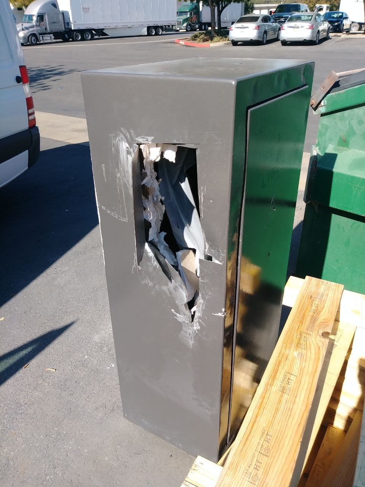

Angle Grinders and Safes — A Deadly Combination

This is what happens when someone who doesn't know what they're doing takes an angle grinder to a safe.
You see cuts like this and you might think, "Well, they got it open, right?" Maybe. But at what cost? The safe in this photo was destroyed — not opened. The fireproofing is compromised, the boltwork may be damaged beyond repair, and the lock is likely gone. What should have been a clean, serviceable opening turned into a total loss.
And honestly? The damage to the safe is only part of the story. The real danger is what happens to you when that grinder hits the wrong thing.
⚠️ Real Danger #1 — Exploding Cutoff Wheels
Angle grinder blades spin at 10,000+ RPM. When a blade snags on steel — especially uneven surfaces like safe door edges or boltwork — it can shatter. Those ceramic or abrasive fragments fly at bullet speed. I've seen guys get hit in the chest, the face, the arms. Safety glasses won't stop a chunk of grinding wheel going 100 mph.
🔥 Real Danger #2 — Fire
Grinding steel produces a shower of hot sparks. Safes often have paper documents, cash, or other flammables packed tight inside. One spark through the cut lands on the contents and you've got a fire inside a steel box — which you can't easily put out. I've seen safes where the owner lost everything inside because of a "quick cut" by an amateur.
💥 Real Danger #3 — Ammunition
This one keeps me up at night. Gun safes. If you don't know what's inside and you go in with a grinder, you could cut into live ammunition. A round cooking off inside a confined steel box isn't a bullet — it's a pipe bomb. The safe becomes a fragmentation grenade. Is saving a few hundred bucks worth that risk?
Here's the thing — a real safe technician doesn't use an angle grinder. We have precise tools and methods:
- Manipulation — Feeling the internal components through the dial. No tools touch the safe. Zero damage.
- Surgical drilling — A precision drill hole in a specific, known location. Patched cleanly afterward. The safe works like new.
- Borescope — Looking inside the safe through a pinhole to diagnose the problem before cutting anything.
An angle grinder is not a safe tool. It's not safe for you, your home, your contents, or your safe. If someone shows up to open your safe with a grinder in their hand — stop them. Call someone who knows what they're doing.
Don't let your safe become someone's learning experience.